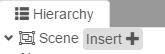
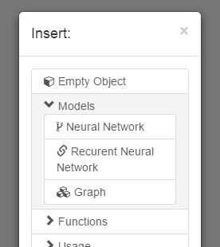
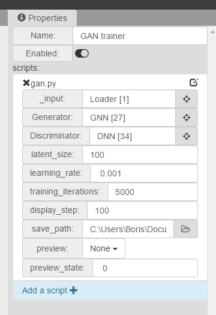
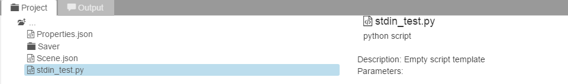
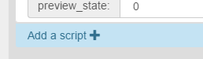
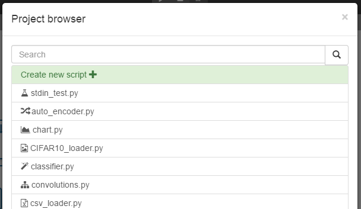
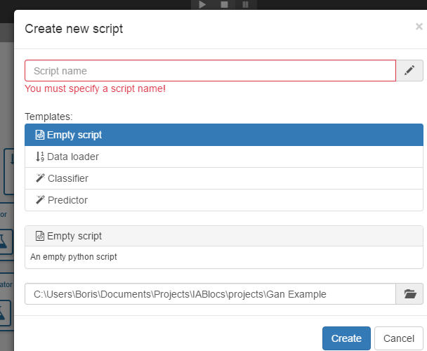
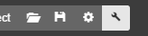
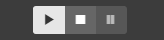

Warning
Editing built-in scripts will modify them for other projects as well! It is recommended to make a copy of those scripts or create a project from a template.
To get started, download the latest version from the Github repo.
Download AI-BlocksUnpack the .7z archive and launch the AI-Blocks executable.
Building and running scenes requires Python and Tensorflow
or
pip install tensorflow
or
pip install tensorflow-gpu
Create a new project from the examples.
When a project is loaded simply press the "Play" button to run the active scene.

You should see console messages saying that the scene is running.
Welcome to AI-Blocks!
To create a new project, launch AI-Blocks and press the "new project" button, you can choose to start a new project from one of the built-in examples.
Once you have loaded a project, you should see four main panels:

The objects are the building blocks of your projects, they are shown on the scene and the hierarchy panel. They contain scripts and represent the modular pieces of your project.
To add a new object, simply press the "insert" button from the Hierarchy panel.

A popup will appear, allowing you to chose to create either an empty object, or a predefined object.

Objects can be dragged in the scene, and resized. To select an object, simply click on it.
The scene window is the main panel of your project.
A scene can be interpreted as a standalone python program. Every active object in a scene is an instance of a script, that has python code in it.
To switch between scenes, use the scenes tab. When you press the Build or Play button, only the active scene will be built.

The active scene can be zoomed with mouse scroll. To select a group of objects, press ctrl+click

The hierarchy window displays every object that you see in the scene, but in a sorted way, allowing you to see parents of objects and the render order. You can swich object's hierarchy and order by dragging them.

The properties panel displays the object's properties. If a script is attached to an object, its public variables will be displayed on the properties panel. For more informations on variables, see the Editor Variables.

A script is a modular component that contains Python code. Every script that is attached to an object is a different instance of that script, with specific public values set by the user in the properties panel.
To attach a script to an object, click on the "add script" button on the properties .

Then select a script from the Project browser. All the scripts in your project will be displayed here. From here, you can either select an existing script or create a new one.

If you click on the create new script button, the script creation interface will show up.

Selecting a template will create a script with built-in code.
Note that creating scripts manually also works. Any manually added file will show in the Project Panel.
To edit a script, press the small "edit" icon in the properties window. The default application associated to .py files will open the script. Make sure you have properly set the default application before using the edit button.

Editing built-in scripts will modify them for other projects as well! It is recommended to make a copy of those scripts or create a project from a template.
That being said, it can be helpful to open built-in scripts, just make sure you know what you are doing :)
Along with Editor Variables, some commented keywords are parsed by the Editor to set some script parameters.
A short script description. This is displayed in the script selection interface and the project panel.
#description A test script
The css class for the script icon font material. Allowed values are Font Awesome and Glyphicons.
#icon fa-fa-cube
The scene's starting point. If targets a function. If it is set, this is where the program will start from when you press the "play" button or when you build a scene.
#MAIN=Run
def Run():
Log("Hi from object: "+self.name)
Scripts can have public properties that are visible in the Editor.
Every Editor variable is declared with a #param header:

When you modify a script, the Editor variables are updated in real time, except when a scene is running.
Here is an exhaustive list of supported Editor variables types:
#param string
myString = "hello word"
#param integer
myInt = 1
#param float
myFloat = 1
Allows the user to type math operations in the inspector. They are evaluated with javascript's eval()
#param eval
myEval = 10*2
Allows the user to type math operations in the inspector. They are evaluated with javascript's eval()
#param bool
myEval = True
When editing this field from the editor, a folder browser window will appead.
#param folder
myString = "C:/Users/Documents/Bob/Projects/"
When editing this field from the editor, a file browser window will appead.
#param file
myString = "C:/Users/Documents/Bob/Projects/foo.bar"
A reference to an object, when an object references an other, a line will show in the scene.
#param object
myObject = None
Displays a dropdown list in the Editor. Allowing the user to choose from one of the elements in the list.
#param list:red, blue, greed
mySelection = "red"
Displays an editable array in the Editor. Arrays can be of the following types: string, integer, float, bool, file, folder, object.
#param array|string
myStringArray = ["one", "two", "three", "four"]
#param array|object
myObjectsArray = []
Zones allow you to show or hide one or many variables inside a zone depending on a condition.
In this example, the foo variable will only be visible in the Editor if the bar variable equals "True":
#param bool
bar = False
#zone bar==True
#param string
foo = "I am visible!"
#endzone
One last thing worth mentioning is that Editor variables can only be called from self. This is because they actually are public class properties.
Here for example, to access the foo propery within my script, i need to do this:
#param string
foo = "hello word"
Log("foo: "+self.foo)
To build a scene, click on the build button, a popup will appear.

Select the folder where you want to build and click the build button.
A python script called main.py will be generated. It is a standalone script that can be run without AI-Blocks, but still requires python and Tensorflow to run.
To run a scene, simply click on the "play" button.

You can cancel the run any time by pressing on the "stop" button next to it.
These properties and functions are always avaliable from any script.
Here is a list of built-in script parameters:
self.id #the id of the object this script was attached to
self.name #the name of the object this script was attached to
NaN #None equivalent for compatibility when eval fails
the flush parameter is used to flush the stdout and stdin buffers.
#shows a message in the console
#ignore errors: uses msg.encode(sys.stdout.encoding, errors='replace')
Log(msg, flush=True, ignore_errors=False)
#shows an error message in the console
LogErr(msg, flush=False)
#shows a message in the console
SetState(id, state, flush=True)
#send a value for a chart widget
SendChartData(id, name, value, color='#3e95cd', flush=True)
#send a value for a pie chart widget
SendPieData(id, name, color='#3e95cd', flush=True)
#send an image to an image viewer widget
#data contains an array or normalized inputs (from 0 to 1)
SendImageData(id, data, width=32, height=32, name="", rgba=False, flush=True, invert=False, offset=0)
#send an matplotlib plot to an image viewer widget
SendGraph(id, data, data2=None, name="", offset=0, flush=True)
The AIBlocks namespace contains wrappers for Tensorflow
Initializes a Tensorflow model.
load_path is an folder path that can be either empty or contains a saved Tensorflow state with the same model. If empty, will not load any model.
returns instance is an instance of the TFInstance class.
instance = AIBlocks.InitModel(load_path="")
instance is an instance of the TFInstance class.
save_path is a folder containing a saved Tensorflow state. If empty, it will get check the initial load_path specified in
AIBlocks.SaveModel(instance, save_path)
Closes a tensorflow session.
instance is an instance of the TFInstance class.
AIBlocks.CloseSession(instance)
AIBlocks.CloseInstance(instance)
Contains state variables for an active Tensorflow session.
#get a new TFInstance instance
instance = AIBlocks.InitModel(load_path="")
feed_dict = {x:data}
#example usages of TFInstance objects:
instance.Run(self, tensors, feed_dict):
instance.session.run(tensors, feed_dict=feed_dict)